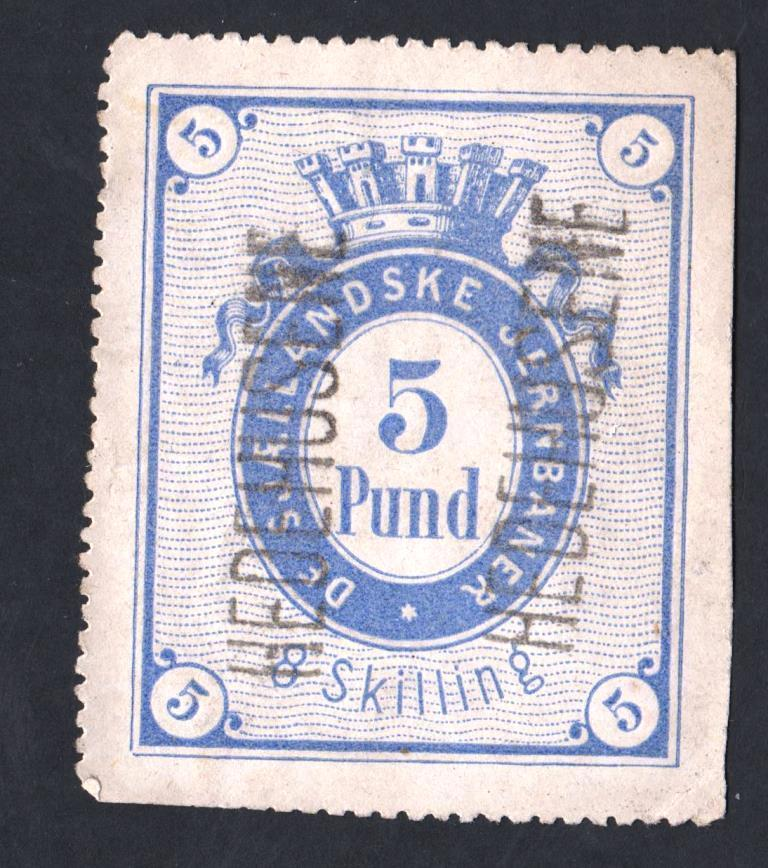
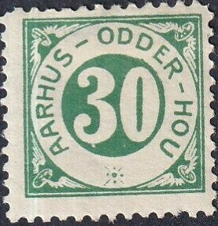
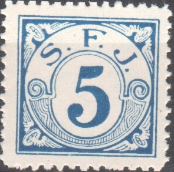
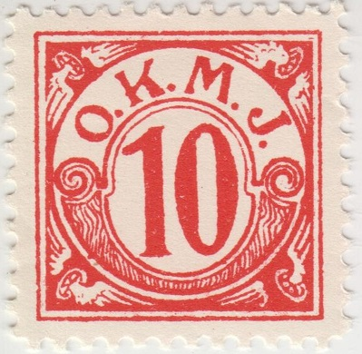
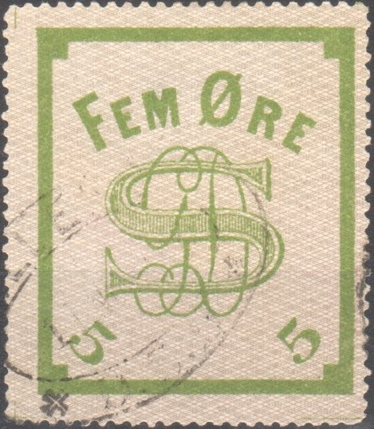
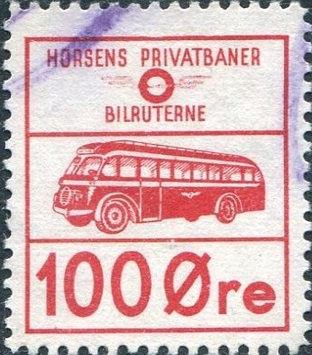
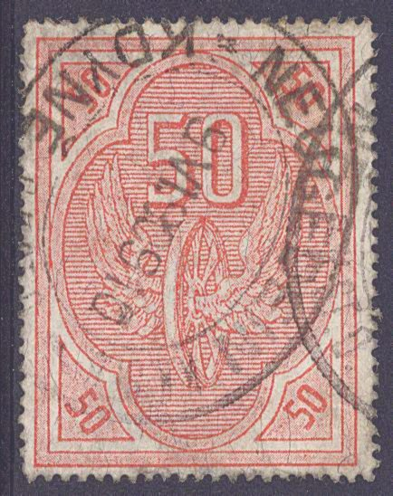
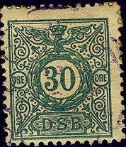

1866 10 Pund 12 Skilling brown value in an ellipse, crown on top. Also a 5 Pund 8 Skilling blue.
Return To Catalogue - Denmark - Denmark Miscellaneous - Denmark Railway Stamps, D.S.B. - Aabenraa to Amagerbanen - Bornholmske to Horsens Vestbaner - Bornholmske to Helsingor -Hillerod to Horsens-Bryrupbanen - Horsens-Bryrup-Silkeborg to Horsens Vestbaner - Horve Vaerslev to Kolding Sydbaners - Langelandsbanen to Nordvestfyenske - Odense - Kerteminde - Dalby to Ronne Nexo - Silkeborg-Herning to Sydfyenske - Thisted-Fjerritslev to Vodskov-Ostervraa
Note: on my website many of the
pictures can not be seen! They are of course present in the
catalogue;
contact me if you want to purchase it.
There were many private railway companies in
Denmark besides the state railway (Danske Statsbaner: DSB),
explaining why there are so many railway stamps.
I've seen many uncancelled railway stamps of Denmark (much more
than cancelled ones), I do not know why this is the case.
Often the stamps exist in two sizes, one for the letter and a
different size for the receipt at the railway office.
These railway stamps are sometimes of quite a large size, since
they were supposed to be used on parcels (and there is more space
on parcels than on ordinary letters).
As for surcharged stamps, I have often seen many fonts, as if the
printer has used all the fonts he could find.....
The earliest railway stamps I know of (The Stamp Collector's Magazine Vol IV, 1866, page 89) are issued in 1866 with inscription "DE SJAELLANDSKE JERNBANER" in the values 8 sk blue (5 Pund) and 16 (12?) sk brown (10 Pund). See also http://a34.dk/banem/regional/dsj/dsj.html (site no longer active). In 1875 a 20 ore blue (10 Pund) was issued in the same design.

1866 10 Pund 12 Skilling brown value in an ellipse, crown on top.
Also a 5 Pund 8 Skilling blue.
  


Many railways issued stamp in this small squarish design. Here
Syfyenske Jernbane (S.F.J.) and "L.F.J.S." (Lolland
Falsterske Jernbane Selskab ), also "L.J." (Lollandske
Jernbane) and "O.M.B." (Odense Middefart Bogense). And
"O.K.M.J" (Odense Kerteminde Martofte Jernbane). And
"S.N.N.B" (Stubbekøbing - Nykøbing - Nysted - Banen).


Train in a circle design: "H.J.J" (Horsens Juelsminde
Jernbane), "R.G.B." (Ryomgaard Gerrild Banen),
"R.G.G.J." (Ryomgaard Gerrild Grenaa Jernbane)

Not easy to identify stamp of Gribskov
Not a stamp, but a charity label for injured and killed railway
workers, inscription "LOKOMOTIVSPERSONALETS HJEALPEFUND
1914", 1 kr black on lilac. These labels were apparently
issued from 1914 to 1957 in different colors. I've also seen a 1
kr black on green.

Not sure what this is, inscription "RANDERS-FREDERIKSHAVN
FRAGT MAERKE"; 1 Kr red, I have also seen 50 o orange, 75 o
blue and 2 Kr green (all unused).

Busparcel stamps, often with inscription "BILRUTERNE",
"RUTEBIL" or "RUTEBILER". There are many of
those, they are not listed in this catalogue. Here some typical
examples.

Wheel with wings, no inscription; It is not even for Denmark,
what I had presumed earlier. The cancel says "KDYNE"
which is a town Czechia. It seems to be an Austrain railway stamp
of around 1900.

Denmark Railway Stamps, D.S.B.
Denmark Railway Stamps, Aabenraa to
Amagerbanen
Denmark Railway Stamps, Bornholmske to
Helsingor
Denmark Railway Stamps, Hillerod to
Horsens-Bryrupbanen
Denmark Railway Stamps,
Horsens-Bryrup-Silkeborg to Horsens Vestbaner
Denmark Railway Stamps, Horve Vaerslev to
Kolding Sydbaners
Denmark Railway Stamps, Langelandsbanen to
Nordvestfyenske
Denmark Railway Stamps, Odense -
Kerteminde - Dalby to Ronne Nexo
Denmark Railway Stamps, Silkeborg-Herning
to Sydfyenske
Denmark Railway Stamps,
Thisted-Fjerritslev to Vodskov-Ostervraa
For more of these stamps see Skandinavia Railway Stamps.
For more images see:
http://zenius.kalnieciai.lt/europe/denmark/railway/railway.html
Site with a lot of information, but only a few images: http://www.a34.dk/banem.html

{kind=link}
{kind=link}
{kind=link}
{kind=link}
{kind=link}
{kind=link}
{kind=link}
{kind=link}